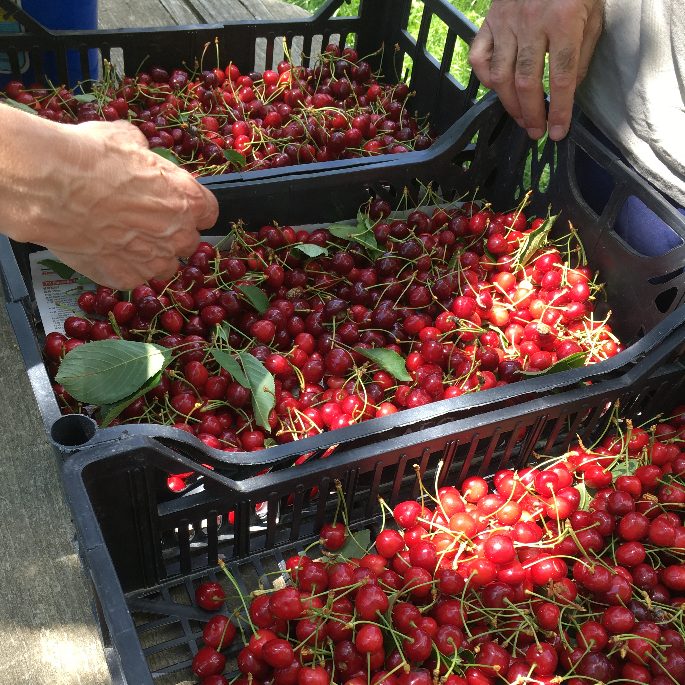

Hello!
I currently study computer science, math, environmental science, and Chinese at the University of Arizona, graduating May 2020.
I love composting, farming, and all things sustainable agriculture.
I am always looking for interesting sustainability projects to work on. If you need any software, web development, or business management or development help with your project or startup, send me an email! I would love to help in any way I can!
about
I am in my third year at the University of Arizona double majoring in computer science and mathematics and double minoring in environmental science and Chinese. In terms of programming, I am particularly interested in object-oriented programming, web development, embedded software, and working with data.I currently work for the University of Arizona Compost Cats and have lots of prior experience in sustainability work. I have worked in waste management, organic farming, and permaculture all over the world in hopes of exploring these industries to see where my technological skills can be applied. I hope to pursue a career combining sustainable agriculture, software development, and travel. In my free time, I enjoy backpacking, bouldering and rock climbing, slacklining, and meeting new people.

projects

mario style platformer game
november 2018 - december 2018

- Java with JavaFX
- traditional platformer with levels, lives, platformers, collectables, enemies
- interactive environments and barriers
- animated enemies, coins, fireballs
- save functionality using serialization
- sound effects and music
- MVC design pattern
- test driven design with Agile style development in a team of four
- full UML and javadoc documentation
the last straw
march 2018 - april 2018
- Designed and led a project with three other team members to reduce plastic straw usage on campus
- Wrote a budget proposal to obtain funding
- Worked with campus sustainability organizations to produce an Earth Day event
- Provided education and gave out metal straws
- Expanded this project into a collaboration with the UA Student Unions to implement further sustainability in campus dining, as well as reaching out to local coffee shops to reduce straw usage in the community
- Conducted surveys to assess the effectiveness and reach of our project
- Produced a video here
compost cats data management system
january 2019 - current
- Designed a long term data management system for tracking the composting process, inputs, and outputs
- Created web forms for data input using CSS, HTML, and Javascript
- Used AJAX, NodeJS, and ExpressJS to import data to CSV files and perform data processing
- Created a user interface for data output and analytics
resume
coursework
Intro to Computer Science I and II
Computer Programming for Engineering Applications
Software Development
Computer Organization
Analysis of Discrete Structures
Object Oriented Programming and Design
Systems Programming and Unix
Web Programming
Ordinary Differential Equations
Formal Mathematical Reasoning and Writing
Introduction to Linear Algebra
Calculus 3
Linear Algebra
Theory of Probability
Soils Science and Lab
Fundamentals of Environmental Science and Sustainability
Water, Environment, and Society
Biology I
Physics I
Fundamentals of Chemistry I and II
work experience
University of Arizona Compost Cats
Farm Technician & Data Analytics Specialist
September 2018 - present
Turn compostable materials from 80 businesses into a valuable soil amendment. Involved in the full process including outreach and education, farm work, testing, data management, and sales. Initiate, implement, and manage team projects such as an overhaul of old data collection/management system, starting composting programs at local high schools, and design of a new business orientation program.
WWOOF Independents
Farm Intern
May 2018 - July 2018
Worked on two permaculture farms in Slovenia. Farm tasks include sowing, processing produce and grains, feeding animals, irrigation, sustainable building, and CSA (community supported agriculture)
Greening the Game
Waste Management Specialist
September 2017 - January 2019
Managed back-end and front-end waste diversion at university athletic events, sustainability education
skills
team oriented Agile style development
project management, design, implementation
object oriented programming, design patterns, documentation
unix
dynamic web programming
mandarin chinese (oral and written)
desire to learn, quick learner
high level of initiative
Java, Python, C
PHP, MySQL, Javascript, AJAX, HTML, CSS
MIPS assembly language
compost operation and business management
equipment operation including loader, tractor, sifter, water truck, forklift